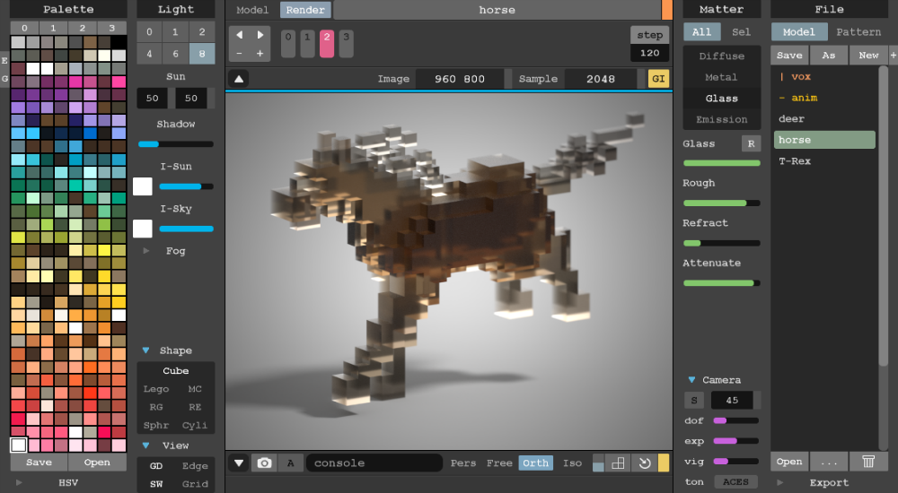

블렌더를 이용한 가벼운 렌더링을 소개하겠습니다.
블렌더를 이용한 가벼운 렌더링을 소개하겠습니다.일단 원하는 모양을 명확하진 않지만 간단히 비슷하게 만들어 줄 수 있는 툴을 소개해 드리겠습니다. 제가 사용한 방식은 obj파일을 다른툴에서 만들어서 블렌더에서 각각의 뼈대들을 넣어주는 방식을 이용하였습니다. 먼저 obj파일을 만드는 것 부터 시작하겠습니다.
-메지카 복셀(MagicaVoxel)
 사각형의 블럭들로 간단한 3d형태의 모델을 만드는 무료툴입니다. 렌더링 초심자는 렌더링툴로 바로 모델링하는 것이 익숙치 않기 때문에 시작하기에는 매우 좋다고 생각합니다.
-메지카 복셀 : 공식 홈페이지 이동(클릭)
-추천하는 강의 : 강의 이동1(클릭),강의 이동2(클릭)
 저의 결과는 이렇게 나왔습니다. 이제 이 파일을 .obj 확장자로 저장하여 블렌더로 실행해보겠습니다.
저의 결과는 이렇게 나왔습니다. 이제 이 파일을 .obj 확장자로 저장하여 블렌더로 실행해보겠습니다.
-블렌더(Blender)
-블렌더 : 공식 홈페이지 이동(클릭)
-추천하는 강의 : 강의 이동(클릭)
블렌더로 옮기고 기초작업후에 기본적으로 블렌더 내에서 지원할 수 있는 사람 기반의 뼈대를 불러와줍니다.
 가상 사람의 뼈대를 메지카 복셀에서 만들었던 모델에 하나하나 지정해주고나면
가상 사람의 뼈대를 메지카 복셀에서 만들었던 모델에 하나하나 지정해주고나면-추천하는 강의 : 강의 이동(클릭)
 뼈대를 움직임에 따라서 그에 지정된 부위들이 함께 움직이는 것을 볼 수 있게됩니다.
뼈대를 움직임에 따라서 그에 지정된 부위들이 함께 움직이는 것을 볼 수 있게됩니다.
유니티에서 적용해 보는 것은 블렌더실습 2에서 보여드리겠습니다.